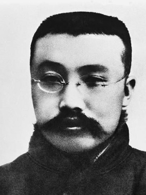
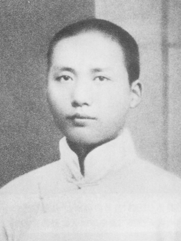
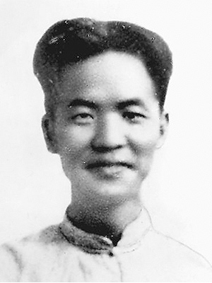
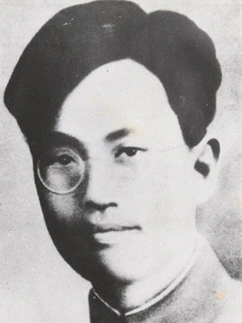
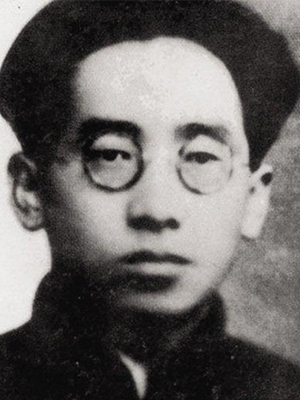
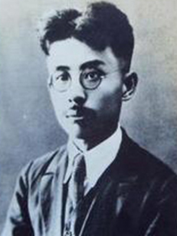
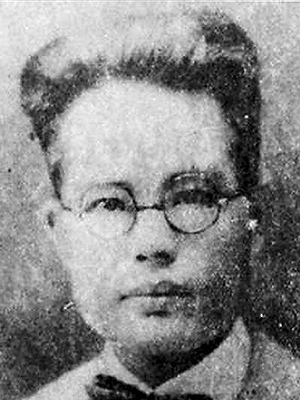
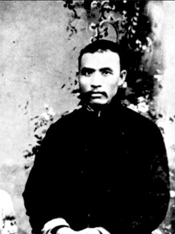
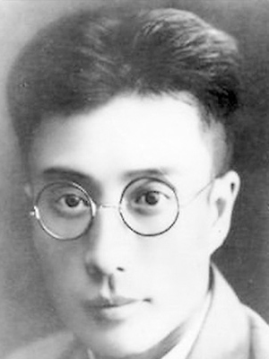

李大钊
中国共产党的创始人及早期革命家
李大钊（1889—1927）河北乐亭人。革命家、学者。1918年起任北京大学图书馆主任，史学、政治学等系教授。马克思主义在中国最早的传播者。中国共产主义运动的先驱和中国共产党的主要创始人之一。中国共产党早期活动的重要领导者。1927年4月28日在北京英勇就义。论著编为《守常文集》、《李大钊文集》等。

陈独秀
中国共产党的创始人及早期革命家
陈独秀（1879—1942）安徽怀宁人。革命家、学者。1917年起任北京大学教授和文科学长。创办《新青年》杂志，高举民主与科学的旗帜，是五四新文化运动的主要倡导者。中国共产党的主要创始人之一。1921年7月至1927年7月为中国共产党的主要领导人。论著编为《独秀文存》等。

毛泽东
中国共产党的创始人及早期革命家
毛泽东（1893—1976）湖南湘潭人。革命家、战略家、理论家。1918年秋至1919年春在北京大学图书馆工作。中国共产党、中国人民解放军和中华人民共和国的主要缔造者和领袖。为中国各族人民解放事业的胜利，为中国社会主义事业的发展建立了不朽的功勋。论著编为《毛泽东选集》、《毛泽东文集》等。

邓中夏
中国共产党的创始人及早期革命家
邓中夏（1894—1933）湖南宜章人。革命家。1923年毕业于北京大学哲学系。五四时期北京学生运动的重要领导人；参与发起“北京大学马克思学说研究会”。是中国早期工人运动的重要领袖。曾当选为中共中央临时政治局候补委员；是中共湘鄂西根据地的主要领导人之一。著有《中国职工运动简史》等。

张太雷
中国共产党的创始人及早期革命家
张太雷（1898—1927）江苏常州人。革命家。1915年入北京大学学习。中国社会主义青年团（1925年改称中国共产主义青年团）的主要领导人之一。1927年7月任中共中央临时政治局常委，同年10月主持中共南方局工作；12月11日参与领导广州起义，任广州苏维埃政府代主席兼人民海陆军委员，12日在战斗中牺牲。

高君宇
中国共产党的创始人及早期革命家
高君宇（1896—1925）山西静乐人。革命家。1922年毕业于北京大学地质系。五四运动的组织者之一，参与组织“北京大学马克思学说研究会”。1922年担任中国社会主义青年团北京地委第一任书记。1923年负责编辑中共中央机关刊物《向导》。在中国共产党第二次全国代表大会上当选为中央委员，又任中央执行委员会委员。并在第一次国共合作中发挥了重要作用。

何孟雄
中国共产党的创始人及早期革命家
何孟雄（1898—1931）湖南酃县人。革命家。1919至1925年在北京大学学习。为中国共产党第一次代表大会前北京党支部的成员。1922年组织领导了京绥铁路大罢工。历任中共北京、湖北、上海等地区组织的领导人。1931年2月7日被国民党军警杀害于上海龙华。

范鸿劼
中国共产党的创始人及早期革命家
范鸿劼（1897—1927）湖北鄂城人。革命家。1918至1925年在北京大学学习。参与发起“北京大学马克思学说研究会”。1922年出任中国共产党北京地委委员长等职，为北京地区和北京大学中共党组织的早期领导人之一。1927年4月28日和李大钊等一起被反动军阀杀害。

黄日葵
中国共产党的创始人及早期革命家
黄日葵（1898—1930）广西桂平人。革命家。1918至1925年在北京大学学习。五四运动的组织者之一；参与发起“北京大学马克思学说研究会”。为中国社会主义青年团的最早成员和中国共产党广西地区组织的早期领导人。曾任国民革命军第八军政治部主任等。

孙炳文
中国共产党的创始人及早期革命家
孙炳文（1885—1927）四川南溪人。革命家。1908年考入京师大学堂，因著文抨击校方弊端被开除，辛亥革命后北京大学恢复其学籍。1921年在北大任教，次年加入中国共产党。曾任国民革命军总司令部秘书长及总政治部后方留守处主任等。1927年“四·一二”政变后被国民党军警杀害于上海龙华。

钱壮飞
中国共产党的创始人及早期革命家
钱壮飞（1895—1935）浙江湖州人。革命家。1919年毕业于北京医学专门学校（现北京大学医学部前身）。1925年加入中国共产党。中共早期情报侦察系统的重要负责人；曾为保卫中共中央的安全做出过特殊贡献。1935年在红军长征途中于贵州南渡乌江时牺牲。